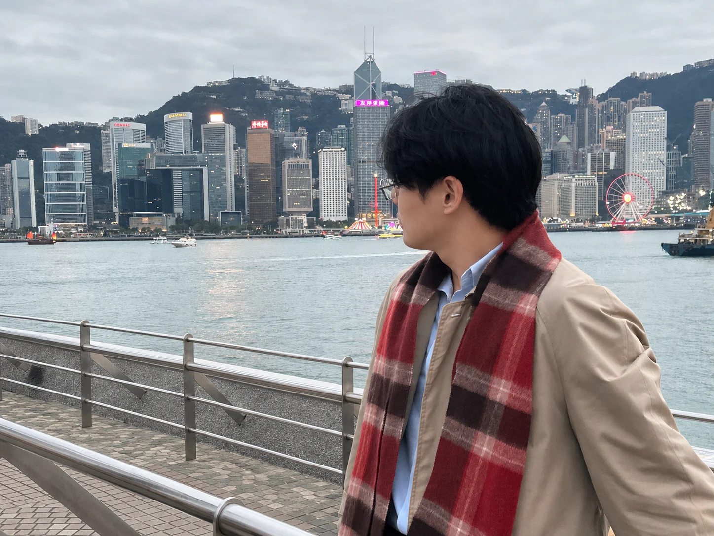

01 / 独立开发 · 产品交付
从一个反复出现的配置难题出发，独立完成开发、定价、销售与售后，让工具走到真实用户手里。
100+付费用户

FIG. 01 — IN THE REAL WORLD一些产品，一些实验。
每一次动手，都从一个真实问题开始。
01 / 独立开发 · 产品交付
从一个反复出现的配置难题出发，独立完成开发、定价、销售与售后，让工具走到真实用户手里。
02 / AI 自动化 · 电商运营
从 PUMA 店铺运营里的重复流程入手，用 AI 辅助开发，把自己的效率工具交给团队。
03 / 内容创作 · 公开实践
记录项目、方法和踩过的坑。把实践公开出来，让有用的经验被需要它的人找到。
你好，我是 Jael。
我在上海，读电子商务。做过社群运营、网店运营，也做过自己的产品，还有一次没成功的创业。
在宝尊实习时，我开始用 AI 解决手边的重复工作。后来，我把一个真实的配置问题做成产品，从开发到售后，完整走了一遍。
不断尝试，快速迭代，永远是我人生的主旋律。这个网站记录的，就是我走到哪儿了。
产品思维、运营经验和 AI 工具，
是我现在带在身上的工具箱。
从重复工作中找切口，把流程梳理清楚，再用工具减少手动操作。先在自己的工作里验证，再交给团队使用。
把想法缩小成一个能验证的版本，用真实使用和反馈决定下一步，让每次迭代都有依据。
从店铺的日常运营到内容记录，关注执行中的问题，用数据与反馈调整做法。
开发之外，也关心定价、销售、交付与售后。让产品到达用户手里，持续解决使用中的问题。
企业真正愿意付钱的 AI 场景是哪些？
传统生意里，哪些环节值得用 AI 重做一遍？